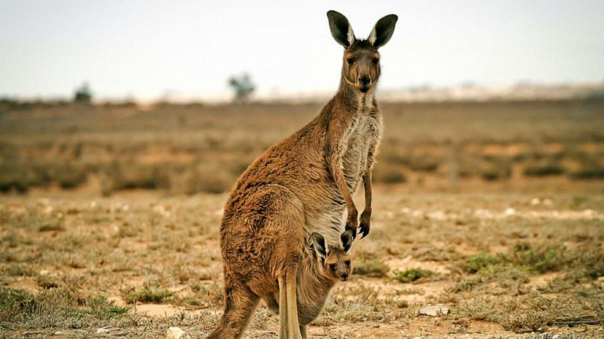
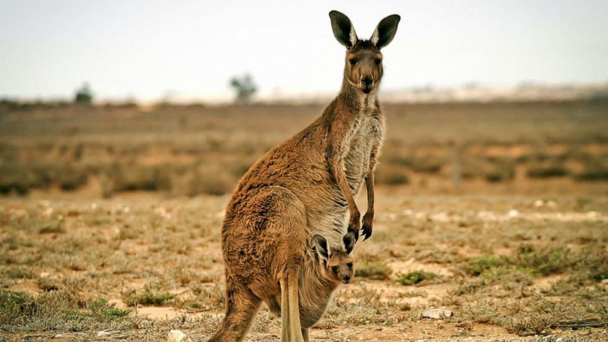

Los Canguros
Cuando hablamos de los canguros, nos viene a la mente la imagen de ese simpático mamífero que se desplaza a saltitos y que protege y transporta a su cría en su bolsa. Sin embargo, son muchos más los rasgos, características y hábitos que definen a estos animales. Por ejemplo, ¿sabías que se trata del marsupial más grande del mundo?
 

Si te preguntabas qué animales están en peligro de extinción, puede que te extrañe saber que hay quienes consideran que este animal, el canguro, está ya en riesgo. El canguro, de la familia Macropodidae, es un animal australiano del cuál se come su carne y también se exporta a otros lugares para su consumo, así como objetivo de actividades turísticas, de la caza furtiva, etcétera. Además, a pesar de su caza, este marsupial sufre sobre todo los efectos del calentamiento global. Podría desaparecer en unos años, según expertos. Si las temperaturas siguiesen aumentando en los próximos años, los canguros podrían estar condenados a desaparecer en unos años, pues su población va descendiendo poco a poco por lo comentado y por el aumento de las temperaturas a mayor ritmo podría empeorar drásticamente en poco tiempo.
Características del canguro
Estas son las principales características del canguro:
- Todos conocemos a los canguros, son animales potentes, con fuertes patas traseras y cola robusta que les sirven para realizar sus grandes saltos en sus desplazamientos, modo con el que se mueven en lugar de correr, pueden alcanzar los 70 km/h.
- El canguro es una especie endémica de Australia, esto quiere decir que es una especie particular de esta zona, no se encuentra en ningún otro lugar de forma natural.
- Son animales herbívoros, miden alrededor de 1,5 metros, alcanzan los 80 kg de peso y pueden llegar a vivir 18 años.
- Otra de sus características es la forma de regular la temperatura corporal, el calor de Australia les ha obligado a tirar de recursos para sobrellevar las temperaturas, el método que utilizan es sencillo, lamen sus patas y se frotan el pecho para disminuir el calor.
Especies de canguros
- Canguro rojo o Macropus rufus: esta especie de canguro es la más grande de entre todos, pueden alcanzar los 2 metros de altura y su pelaje es marrón rojizo por la parte superior, por ello el nombre. Suelen habitar la zona central y oeste del país.
- Canguro gris oriental, canguro gigante o Macropus giganteus: es ligeramente más pequeño que el canguro rojo aunque la diferencia es pequeña, habita la zona este del país.
- Canguro gris occidental o Macropus fuliginosus: habitan en la zona oeste del país, llegan a pesar 54 kg por lo que son más pequeños que los anteriores.